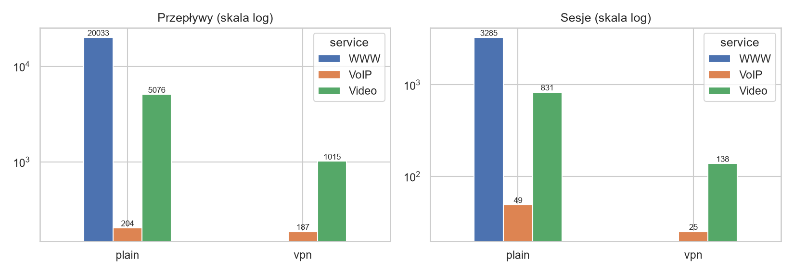
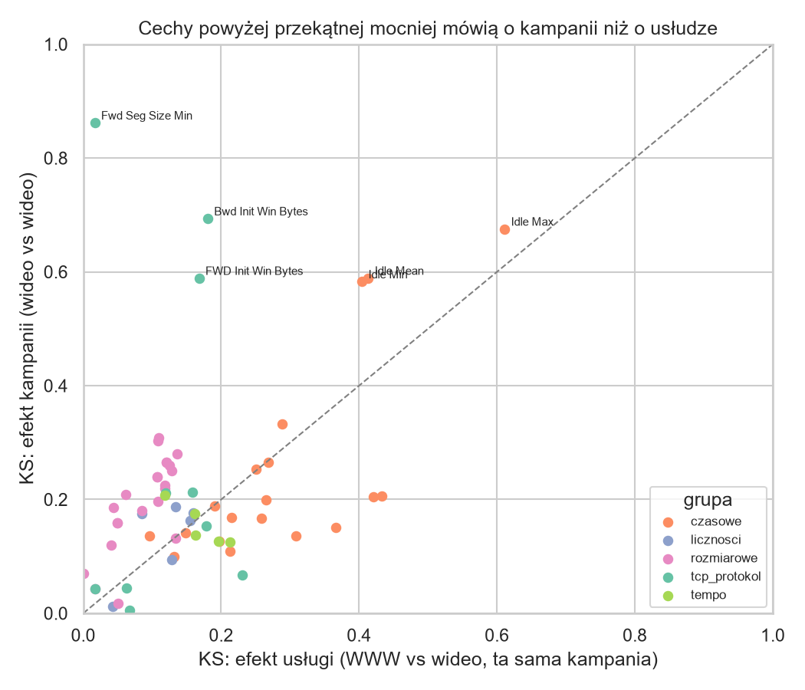
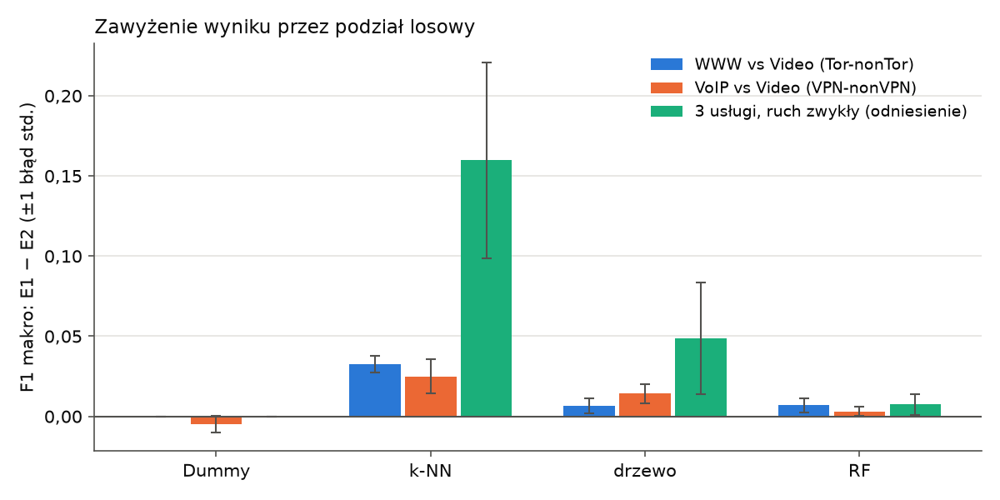
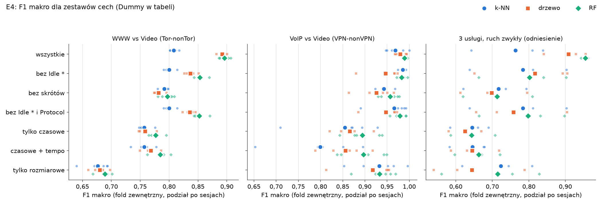
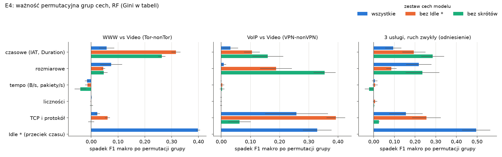
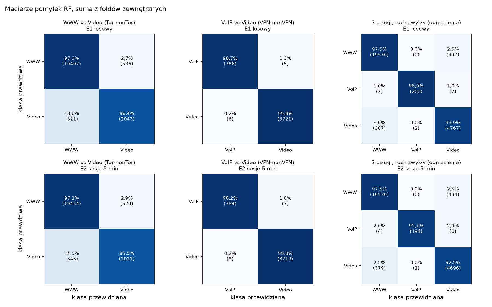
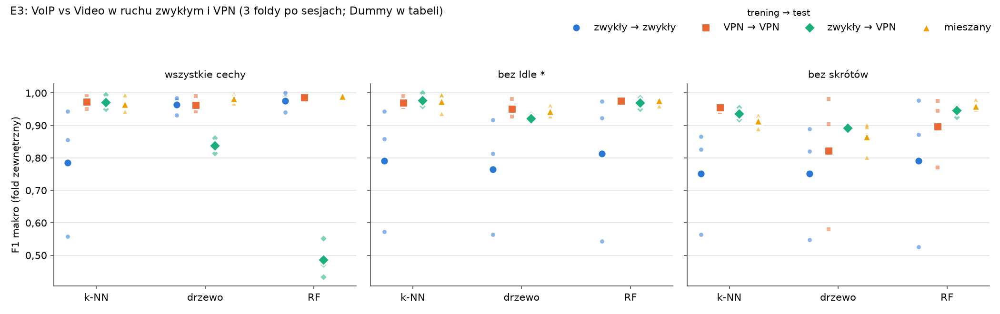

Klasyfikacja usług w zaszyfrowanym ruchu sieciowym na podstawie statystyk przepływów
1Wprowadzenie
Większość ruchu w Internecie jest dziś szyfrowana, a mimo to operator chce odróżniać rozmowy (wrażliwe na opóźnienie) od wideo (wymagającego przepustowości), np. do nadawania priorytetów. Klasyczna inspekcja treści nie działa, pozostają cechy zewnętrzne: rozmiary pakietów, odstępy między nimi, czas trwania połączenia.
Projekt odpowiada na trzy pytania badawcze:
P1. Które cechy niosą więcej informacji o usłudze: czasowe czy rozmiarowe?
P2. O ile sposób podziału danych na uczące i testowe zawyża wynik?
P3. Czy tunel VPN utrudnia rozpoznanie usługi?
2Dane i ich przygotowanie
Źródłem jest publiczny zbiór CIC-Darknet2020 (Canadian Institute for Cybersecurity), w którym ruch nagrano w laboratorium i opisano narzędziem CICFlowMeter. Każdy wiersz to jeden przepływ z 62 cechami liczbowymi oraz etykietą usługi i rodzaju tunelu.
Usunięto uszkodzony wiersz, duplikaty oraz ruch tła, który nie należy do żadnej usługi (DNS, NTP, DHCP, mDNS, SSDP, rozgłoszenia i protokoły inne niż TCP/UDP). Porty służą wyłącznie do filtrowania, nie są cechami modelu: inaczej model uczyłby się numerów portów zamiast zachowania ruchu.
def background_reason(df): reason = pd.Series("", index=df.index) reason[~df["Protocol"].isin([6, 17])] = "protokół inny niż TCP/UDP" for col in ["Dst Port", "Src Port"]: hit = df[col].map(BACKGROUND_PORTS) reason = reason.mask((reason == "") & hit.notna(), hit) mb = df["Dst IP"].map(is_multicast_or_broadcast) reason[(reason == "") & mb] = "multicast/broadcast" return reason
Przepływy połączono w sesje, które są kluczowe dla uczciwej oceny (rozdz. 3).
def assign_sessions(df, gap_min): """Sesja = ta sama nieuporządkowana para IP, ta sama etykieta, przerwa <= gap_min.""" key = df["traffic_type"] + "|" + df["service"] + "|" + ip_pair(df) order = pd.DataFrame({"key": key, "ts": df["ts"]}).sort_values(["key", "ts"]) new = order["key"].ne(order["key"].shift()) | ( order["ts"].diff() > pd.Timedelta(minutes=gap_min)) return new.cumsum().reindex(df.index).astype(int)

3Metodyka
3.1 Modele
Porównywane są trzy klasyfikatory o różnej naturze oraz model odniesienia. Każdy jest zamknięty w potoku razem ze standaryzacją cech.
def pipeline(self, seed=SEED): """Skalowanie i model w jednym potoku, żeby test nie wpływał na skalowanie.""" return Pipeline([("scale", StandardScaler()), ("clf", self.make(seed))]) "rf": ModelSpec("rf", lambda seed: RandomForestClassifier( n_estimators=200, class_weight="balanced", random_state=seed), {"max_depth": [10, 20, None], "max_features": ["sqrt", 0.3], "min_samples_leaf": [1, 5]}),
class_weight="balanced" kompensuje niezrównoważenie klas.3.2 Schemat oceny
Wynik oceniany jest w zagnieżdżonej walidacji krzyżowej, porównując dwa sposoby podziału: losowy (E1) i po sesjach (E2).
for _, fold_test in _split(spec.kind, spec.n_outer, spec.seed + repeat, data.strata.iloc[test_pos], data.groups.iloc[test_pos]): test_idx = test_pos[fold_test] exclude = np.zeros(len(data.y), dtype=bool) if spec.kind == "session": # żadna sesja z testu nie może pojawić się w uczeniu exclude = data.groups.isin(data.groups.iloc[test_idx]).to_numpy(copy=True) exclude[test_idx] = True train_idx = np.flatnonzero(data.train_mask & ~exclude)
_split() używa StratifiedGroupKFold (grupy = sesje), a fit_tuned() stroi model wewnętrzną CV tak samo, jak powstają modele finalne. Moduł nie wykonuje I/O i jest pokryty testami w test_evaluate.py.3.3 Miara jakości
Główną miarą jest F1 makro; pomocniczo raportowane są macierze pomyłek i F1 ważone sesjami.
"f1_macro": f1_score(y_true, y_pred, labels=labels, average="macro"), # każda sesja waży tyle samo: czy wynik nie ciągnie jedna długa rozmowa "f1_macro_session_weighted": f1_score(y_true, y_pred, labels=labels, average="macro", sample_weight=1.0 / sizes),
4Wyniki
4.1 Efekt kampanii nagraniowej
Zbiór powstał w dwóch niezależnych kampaniach: Tor-nonTor (zawiera WWW) i VPN-nonVPN (zawiera VoIP). Wideo nagrano w obu. Las losowy odróżnia kampanię na samym wideo z dokładnością zbalansowaną 0,997, a po usunięciu wszystkich cech-skrótów (4.3) nadal 0,982.

4.2 Podział losowy a podział po sesjach (P2)

Odpowiedź na P2: podział losowy systematycznie zawyża wyniki, najmocniej dla metod opartych na podobieństwie. Wszystkie dalsze wyniki pochodzą z podziału po sesjach.
4.3 Cechy-skróty i ważność grup cech (P1)
Część cech opisuje okoliczności nagrania, a nie usługę. Grupa Idle * w 51% przepływów zawiera w praktyce bezwzględny czas, czyli datę nagrania, a każdą usługę nagrywano innego dnia. Cechy Fwd Seg Size Min i Init Win Bytes zależą od systemu operacyjnego nagrywającego komputera. Po usunięciu jednej grupy model przejmuje następną, dlatego wiarygodny jest wyłącznie zestaw bez skrótów (55 cech).
TCP_SHORTCUTS = ("Fwd Seg Size Min", "FWD Init Win Bytes", "Bwd Init Win Bytes") FEATURE_SETS = { ... "bez_skrotow": lambda features: [f for f in features if not _is_idle(f) and f not in TCP_SHORTCUTS],

Do oceny, które cechy są ważne, użyto ważności permutacyjnej grup.

Odpowiedź na P1: zależy od zadania. WWW od wideo odróżniają głównie cechy czasowe (RF na samych czasowych 0,777 vs na samych rozmiarowych 0,689), a VoIP od wideo cechy rozmiarowe (0,933 vs 0,895).
4.4 Wyniki główne
| Zadanie | Model | F1 makro | skala 0–1 |
|---|---|---|---|
| VoIP vs Video | Dummy | 0,519 ± 0,012 | |
| k-NN | 0,942 ± 0,016 | ||
| drzewo | 0,926 ± 0,040 | ||
| RF | 0,957 ± 0,022 | ||
| WWW vs Video | Dummy | 0,496 ± 0,000 | |
| k-NN | 0,791 ± 0,007 | ||
| drzewo | 0,782 ± 0,009 | ||
| RF | 0,797 ± 0,012 |
Las losowy jest najlepszy w obu zadaniach, ale po usunięciu skrótów jego przewaga nad prostszymi modelami jest w granicach rozrzutu między foldami. Klasyfikacja jednego przepływu przez RF trwa ok. 10 µs.

4.5 Wpływ VPN (P3, eksperyment E3)

Odpowiedź na P3: brak dowodu, że VPN utrudnia rozróżnienie VoIP od wideo. Rytm i rozmiary pakietów przechodzą przez tunel w dużej mierze niezmienione.
4.6 Klasa nieznana modelowi (E5)
Przepływy Audio (streaming muzyki), których modele nigdy nie widziały, podano modelom finalnym. Trafiają prawie wyłącznie do Video (do VoIP najwyżej 1,5%), co jest zgodne z intuicją: oba są strumieniami jednokierunkowymi. Ponownie widać efekt kampanii: model z kampanii Tor-nonTor klasyfikuje Audio jako WWW w 29,1% przypadków, model z VPN-nonVPN tylko w 2,4% (results/05_e5/, kod: e5_audio.py).
5Zagrożenia dla trafności wniosków
- Jeden zbiór laboratoryjny. Wyniki mogą nie przenosić się na ruch rzeczywisty. Odpowiedź: własne nagrania w etapie 06 (E7).
- Mała liczba sesji VoIP. Największa sesja to 30% przepływów VoIP; w zadaniu trzech usług użyto przez to 3 foldów zamiast 5.
- Nieusuwalny efekt kampanii. Nawet bez skrótów kampanię da się rozpoznać (0,982). Dlatego wnioski opierają się na zadaniach wewnątrz kampanii.
- Definicja sesji. Próg 5 min jest arbitralny; analiza wrażliwości (15 min oraz grupowanie po samej parze IP) nie zmienia wniosków.
6Architektura kodu i artefakty
Kod tworzy liniowy potok od surowego pliku CSV do zapisanych modeli. Kliknij etap, aby otworzyć plik.
| Plik | Rola |
|---|---|
| src/models.py | definicje modeli i siatek hiperparametrów |
| src/importance.py | ważność grup cech (Gini, permutacja grupy) |
| src/model_store.py | bezpieczne wczytanie modelu: sprawdza SHA-256 i wersje bibliotek |
| src/check_models.py | kontrola, że 9 modeli wczytuje się i przewiduje na danej maszynie |
| models/metadata.json | opis modeli: kolejność cech, wersje, commit, wyniki CV, sesje odłożone na pokaz |
| models/*.joblib | 9 potoków (k-NN, drzewo, RF × 3 zadania); także w GitHub Release models-v1 |
| notebooks/01_eda.ipynb | eksploracyjna analiza danych |
| tests/ | 128 testów automatycznych (pytest) |
| docs/decyzje.md | dziennik decyzji metodycznych z uzasadnieniem |
| docs/research/literatura.md | przegląd literatury (16 prac) |
actual = file_sha256(path) if actual != entry["sha256"]: raise ValueError(f"{path.name}: SHA-256 {actual} różni się od metadata.json") with warnings.catch_warnings(): warnings.simplefilter("error") # ostrzeżenie o wersji sklearn = błąd return joblib.load(path)
7Stan prac i dalsze kroki
- 00–01✓Ocena źródeł danych, przegląd literatury
- 02✓Weryfikacja i odtwarzalne przygotowanie danych
- 03✓Moduł oceny; E1/E2: podział losowy vs po sesjach (P2)
- 04✓E3 (VPN, P3), E4 (zestawy cech, P1), wykrycie cech-skrótów
- 05✓9 modeli finalnych, E5 (Audio) kontrola na laptopie otwarta
- 06●W toku: E7, własne nagrania ruchu i test modeli na danych spoza zbioru
- dalej○Aplikacja demonstracyjna (Streamlit), raport końcowy, prezentacja
Linki „otwórz lokalnie” działają, gdy plik jest otwarty z folderu reports/ repozytorium; linki GitHub wskazują commit 014d170. Wszystkie liczby pochodzą z plików w reports/results/.